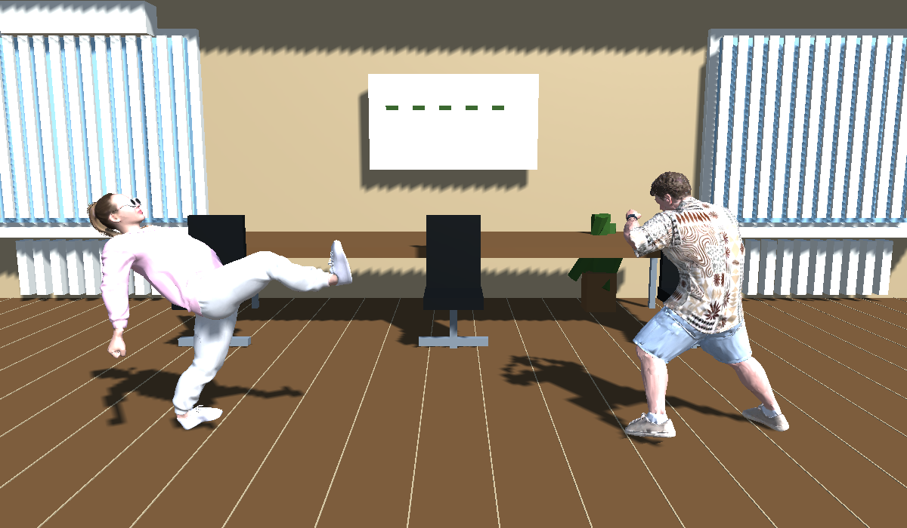

Время
выяснить отношения.
Выбери бойца. Найди место.
Остальное решится на арене.
БОЕЦ / 02
СКОРОСТЬ / ТОЧНОСТЬ
Розовая пантера
Быстрые серии · удары с разворота
Выбери бойца. Найди место.
Остальное решится на арене.
Быстрые серии · удары с разворота

Направление + рука или нога меняют приём. Удержание блока — защита. Урон в будущей реализации определяется контактом конечности с телом, а движение ограничивается границами арены.
Этот экран демонстрирует расположение и отклик элементов; новая механика боя пока не реализована.